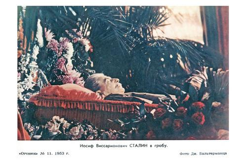

Злоключения мумии Сталина.

Морозной ночью с 31 октября на 1 ноября 1961 года тело Сталина было
вынесено из мавзолея и зарыто в землю у кремлевской стены. Операция
проводилась в обстановке жесточайшей секретности. Чтобы избежать нежелательных
свидетелей закрыли и обнесли фанерными щитами Красную Площадь. Людям объяснили,
что идет подготовка к демонстрации, намеченной на 7-е ноября. Еще один ряд
заграждений отделил мавзолей и могилу от пространства площади. Под прикрытием
ночи и заграждений, тело было извлечено из мавзолея и предано земле.
Примерно так, в один абзац эта история сохранилась в документах кремлевских
архивов. И все же тайну похоронить не удалось. Теперь, сложив воедино массу
косвенных доказательств можно со всей уверенностью сказать, что тело Сталина
и по сей день находится в одном из украинских городов, будучи в прекрасном
состоянии.
Невероятно, но факт: Все участники этой таинственной операции по захоронению
Сталина умерли при странных обстоятельствах. В качестве причины смерти
обычно фигурировал несчастный случай. Погибли все кроме одного - Аркадия
Зайченко, который благополучно дожил до глубокой старости и скончался в
Киеве, в возрасте 93-х лет. Это случилось в 2008 году. Мне посчастливилось
встретиться с этим человеком за несколько месяцев до его смерти, когда я
посещал Украину, имея при себе удостоверение сотрудника правозащитной
организации "Хьюман Райтс Уотч".
Говоря о причинах, толкнувших советское руководство на этот шаг, можно
предположить многое. Во первых, в КПСС началась внутренняя борьба, когда
партия разделилась на два лагеря - "хрущевцев" и "сталинцев". Необходимо,
также, упомянуть и такую одиозную личность тех лет, как Юрий Гагарин.
Это был убежденный антисоветчик, который став знаменитым на весь мир, не
особенно старался скрывать свои убеждения. Хрущев относился к нему как к сыну.
- Юра, назови свое самое заветное желание, и я его выполню. - сказал как-то
он в шутку.
- Ну, если самое-самое, то уберите эту мерзость из мавзолея. - так же в
шутку ответил Гагарин.
Хрущев ухмыльнулся но обещал подумать. Беседа происходила при свидетелях.
Какую именно "мерзость" предлагалось убрать, Гагарин не пояснил. В мавзолее
находилось тогда два тела. Скорее всего имелись в виду оба, но Хрущев понял
по своему. Спустя несколько месяцев просьба была исполнена. Конечно, были и
другие причины.
Как и следовало ожидать, "сталинцы" не могли допустить такого обращения с
телом вождя. Поэтому в кратчайшие сроки, буквально за неделю до похорон, ими
были разработаны целых два плана. Второй план вступал в силу, в случае если
бы не сработал первый. Согласно первому плану, все участники похоронной
команды уговаривались, запугивались или подкупались в целях отдать тело
специально подосланным людям от "сталинцев". Потом надлежало доложить
Хрущеву, что приказ исполнен. Сделать это было не трудно, поскольку
"посвященных" было около двух десятков человек. Второй план был
"техническим". С территории Кремля, под кремлевской стеной был выкопан
подземный ход к могиле. Если бы гроб с телом Сталина действително закопали,
он попал бы в руки нужных людей уже через полчаса. А Хрущев и вся похоронная
команда были бы уверены, что приказ выполнен.
Какой план был приведен в исполнение, мы наверное никогда уже не узнаем.
Аркадий Зайченко, участник событий этого тоже не знает, поскольку занимался
подсобными работами по установке ограждения и уборке в помещении мавзолея.
Однако один из планов сработал. Господин Зайченко передал мне несколько
фотографий тела Вождя. В последствии, экспертиза, произведенная в США,
доказала, что снимки сделаны не ранее 1990 года, а скорее всего на рубеже
21-го века.
Точное место, где находится тело он отказался сообщить наотрез. Он намекнул
только, что гроб находится на Украине. Не помогло и мое удостоверение
международной правозащитной организации, которое обычно открывало мне все
потайные двери украинского политикума.
Возьму на себя смелость предположить, что объект данного расследования
хранится на западе страны, и скорее всего в городе Виннице. Именно там
сохраняется до сих пор тело русского хирурга Пирогова. Именно там имеются
специалисты по сохранению забальзамированных тел. Одним словом, больше
негде. Но это всего лишь моя личная гипотеза.
Рассказ Аркадия Зайченко косвенно подтверждается и независимыми
американскими исследователями. С помощью портативного аппарата УЗИ они
пытались зондировать могилу Сталина. Возможности техники не позволили
определить, кто там похоронен и похоронен ли вообще. Однако, под надгробным
памятником обнаружились необычные подземные сооружения. Вне всякого
сомнения, это и есть тот потайной ход, который использовался заговорщиками -
сталинистами.
Читатели, наверное, зададут вопрос. А почему эта история стала известна
только сейчас? И здесь возникает еще одна крупная фигура мировой политики.
Это президент Грузии Михаил Саакашвили. Он всегда был поклонником Сталина и
старался во всем подражать своему учителю. В 2007 году он испытывал большие
проблемы в своей стране со стороны собственного народа. Близились выборы,
Грузия кипела антипрвительственными выступлениями. И вот в этот момент, он
нанес визит на Украину к своему другу Виктору Ющенко. Помимо всего прочего,
он тайно побывал у гроба своего кумира, чтобы зарядиться уверенностью и
силой. Определенные люди в спецслужбах Украины конечно же знают где хранится
тело.
Как и следовало ожидать, за грузинским президентом последовало российское
ФСБ, а за ними и наши американские службы.
Саакашвили мастерски замел следы и оставил русских с носом. Потеряли след и
мы. Но по крайней мере, теперь все знают об этом удивительном объекте,
который хранится на Украине под семью замками.
Дальнейшая же сохранность тела вызывает опасения. После того как тайна
приоткрылась, тело может стать предметом повышенного интереса ФСБ. Не
забудем о недавно объявленной "десталинизации". Выкрасть это тело и публично
над ним надругаться, уничтожить - какой сильный пиар-ход нынешней
кремлевской власти в предверии скорых выборов!
Я думаю, тело Сталина - это ценность не только украинского, но и вообще
мирового масштаба. Возможно, историкам всего мира следует объединиться и
оказать давление на Украину. Как знать, быть может бесценной реликвии
осталось недолго оставаться в покое, забвении и вообще в сохранности.
Юрий Шимановский.
Апрель 2011, "Интеллидженс Инсайд", Винсборо, США.
Назад|На главную